전자기사 (2018-04-28 기출문제)
1과목: 전기자기학
1. 대전 도체 표면전하밀도는 도체 표면의 모양에 따라 어떻게 분포하는가?
- 표면전하밀도는 뾰족할수록 커진다.
- 표면전하밀도는 평면일 때 가장 크다.
- 표면전하밀도는 곡률이 크면 작아진다.
- 표면전하밀도는 표면의 모양과 무관하다.
(정답률: 58%)

2. Biot-Savart의 법칙에 의하면, 전류소에 의해서 임의의 한 점(P)에 생기는 자계의 세기를 구할 수있다. 다음 중 설명으로 틀린 것은?
- 자계의 세기는 전류의 크기에 비례한다.
- MKS 단위계를 사용할 경우 비례상수는 1/4π이다.
- 자계의 세기는 전류소와 점 P와의 거리에 반비례한다.
- 자계의 방향은 전류소 및 이 전류소와 점 P를 연결하는 직선을 포함하는 면에 법선방향이다.
(정답률: 44%)
3. 일정전압의 직류전원에 저항을 접속하여 전류를 흘릴 때, 저항값을 20% 감소시키면 흐르는 전류는 처음 저항에 흐르는 전류의 몇 배가 되는가?
- 1.0배
- 1.1배
- 1.25배
- 1.5배
(정답률: 73%)
4. 내부도체의 반지름이 a(m)이고, 외부도체의 내반지름이 b(m), 외반지름이 c(m)인 동축케이블의 단위 길이당 자기 인덕턴스는 몇 H/m 인가?
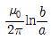
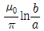
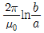
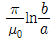
(정답률: 69%)
5. 무한장 솔레노이드에 전류가 흐를 때 발생되는 자장에 관한 설명으로 옳은 것은?
- 내부 자장은 평등자장이다.
- 외부 자장은 평등자장이다.
- 내부 자장의 세기는 0이다.
- 외부와 내부의 자장의 세기는 같다.
(정답률: 49%)
6. N회 감긴 환상코일의 단면적이 S(m2)이고 평균 길이가 ℓ(m)이다. 이 코일의 권수를 2배로 늘이고 인덕턴스를 일정하게 하려고 할 때, 다음 중 옳은 것은?
- 길이를 2배로 한다.
- 단면적을 1/4로 한다.
- 비투자율을 1/2배로 한다.
- 전류의 세기를 4배로 한다.
(정답률: 60%)
7. x ＞ 0인 영역에 ε1=3인 유전체, x ＜ 0인 영역에 ε2=5인 유전체가 있다. 유전율 ε2인 영역에서 전계가 E2 = 20ax + 30ay - 40az V/m 일 때, 유전율 ε1인 영역에서의 전계 E1(V/m)은?
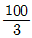
ax + 30ay - 40az- 20ax + 90ay - 40az
- 100ax + 10ay - 40az
- 60ax + 30ay - 40az
(정답률: 47%)
8. 자기회로에서 키르히호프의 법칙으로 알맞은 것은? (단, R : 자기저항, ø : 자속, N : 코일 권수, I : 전류이다.)
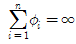
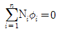
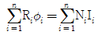
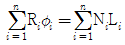
(정답률: 52%)
9. 전계
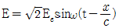
(V/m)의 평면 전자파가 있다. 진공 중에서 자계의 실효값은 몇 A/m 인가?- 0.707 × 10-3Ee
- 1.44 × 10-3Ee
- 2.65 × 10-3Ee
- 5.37 × 10-3Ee
(정답률: 30%)
10. 공기 중에서 코로나방전이 3.5kV/mm 전계에서 발생된다고 하면, 이 때 도체의 표면에 작용하는 힘은 약 몇 N/m2 인가?
- 27
- 54
- 81
- 108
(정답률: 33%)
11. 매질 1의 μs1=500, 매질 2의 μs2=1000이다. 매질 2에서 경계면에 대하여 45°의 각도로 자계가 입사한 경우 매질 1에서 경계면과 자계의 각도에 가장 가까운 것은?
- 20°
- 30°
- 60°
- 80°
(정답률: 47%)
12. 유전율이 ε인 유전체 내에 있는 점전하 Q에서 발산되는 전기력선의 수는 총 몇 개인가?
- Q
- Q / ε0εs
- Q / εs
- Q / ε0
(정답률: 50%)
13. 대지의 고유저항이 ρ(Ω∙m)일 때 반지름 a(m)인 그림과 같은 반구 접지극의 접지저항(Ω)은?
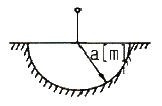
- ρ / 4πa
- ρ / 2πa
- 2πρ / a
- 2πρa
(정답률: 46%)
14. 반지름 a(m)의 원형 단면을 가진 도선에 전도전류 ic=Icsin2πft(A)가 흐를 때 변위전류밀도의 최대값 Jd는 몇 A/m2가 되는가? (단, 도전율은 σ(S/m)이고, 비유전율은 εr이다.)
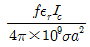
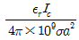
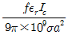
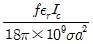
(정답률: 23%)
15. 공기 중에서 1m 간격을 가진 두 개의 평행 도체 전류의 단위길이에 작용하는 힘은 몇 N 인가? (단, 전류는 1A라고 한다.)
- 2 × 10-7
- 4 × 10-7
- 2π × 10-7
- 4π × 10-7
(정답률: 43%)
16. 전하밀도 ρs(C/m2)인 무한 판상 전하분포에 의한 임의 점의 전장에 대하여 틀린 것은?
- 전장의 세기는 매질에 따라 변한다.
- 전장의 세기는 거리 r에 반비례한다.
- 전장은 판에 수직방향으로만 존재한다.
- 전장의 세기는 전하밀도 ρs에 비례한다.
(정답률: 41%)
17. 히스테리시스 곡선에서 히스테리시스 손실에 해당하는 것은?
- 보자력의 크기
- 잔류자기의 크기
- 보자력과 잔류자기의 곱
- 히스테리시스 곡선의 면적
(정답률: 59%)
18. 한 변의 길이가 ℓ(m)인 정사각형 도체 회로에 전류 I(A)를 흘릴 때 회로의 중심점에서 자계의 세기는 몇 AT/m 인가?
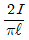
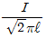
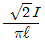
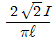
(정답률: 65%)
19. 무한장 직선 전류에 의한 자계의 세기(AT/m)는?
- 거리 r에 비례한다.
- 거리 r2에 비례한다.
- 거리 r에 반비례한다.
- 거리 r2에 반비례한다.
(정답률: 63%)
20. 다음 (가), (나)에 대한 법칙으로 알맞은 것은?
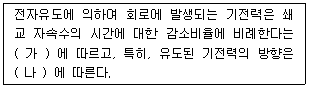
- (가)패러데이의 법칙, (나)렌츠의 법칙
- (가)렌츠의 법칙, (나)패러데이의 법칙
- (가)플레밍의 왼손법칙, (나)패러데이의 법칙
- (가)패러데이의 법칙, (나)플레밍의 왼손법칙
(정답률: 61%)
2과목: 회로이론
21. 그림과 같은 회로에서 최대 전력이 공급되기 위한 복소임피던스(ZL)의 값은?
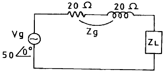
- 20+j20
- 20-j20
- 100+j100
- 100-j100
(정답률: 38%)
22. 인덕턴스 0.01H의 코일에 전압 100V인 교류신호를 가하였을 때 이 코일에 흐르는 전류는 몇 A 인가? (단, 주파수는 50㎐이다.)
- 28.8 ∠ 90°
- 28.8 ∠ -90°
- 31.8 ∠ 90°
- 31.8 ∠ -90°
(정답률: 49%)
23. 단위 세기의 임펄스 함수인 δ(t)의 Fourier 변환은?
- 0
- 1
- 1 / jω
- ejωt
(정답률: 58%)
24. 2개의 4단자 회로를 연결했을 때 전체 임피던스 파라미터가 각각의 임피던스 파라미터의 합으로 표시되었다면 2개의 4단자 회로에 연결 상태로 옳은 것은?
- 병렬 접속되어 있다.
- 직렬 접속되어 있다.
- 직병렬 접속되어 있다.
- 단락상태로 되어 있다.
(정답률: 53%)
25. t=0일 때 스위치를 닫으면 C에 걸리는 전압의 과도현상을 올바르게 표현한 것은?
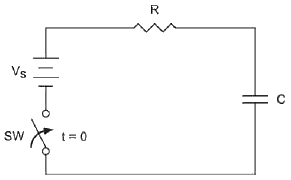
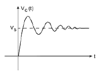
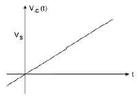
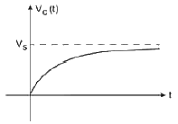
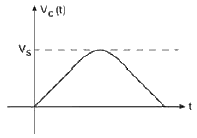
(정답률: 66%)
26.
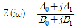
에서 정저항 회로가 되기 위한 조건으로 옳은 것은? (단, A0, A1, B0, B1은 ω의 함수로 실수이다.)- A0B0 = A1B1
- A0A1 = B0B1
- A0B1 = A1B0
- 항상 정저항 회로이다.
(정답률: 44%)
27. 컨덕턴스가 G = G0 + 2G1cosω0t인 회로에 정현파 전압 V = V0ejωt을 인가할 때, 전류의 주파수 성분이 아닌 것은?
- ω
- ω - ω0
- ω + ω0
- ω × ω0
(정답률: 50%)
28. 내부 임피던스가 순저항 50Ω인 전원과 450Ω의 순저항 부하 사이에 임피던스 정합을 위한 이상변압기의 권선비 N1 : N2는?
- 1 : 2
- 1 : 3
- 2 : 3
- 1 : 4
(정답률: 72%)
29. 다음 그림의 회로망에서 V1(t) = e-2tu(t)일 때 V2(t)는? (단, 콘덴서는 미리 충전되어 있지 않다.)
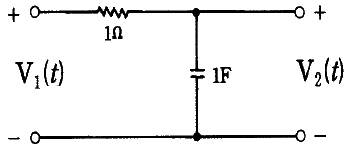
- (e-t - e-2t)u(t)
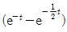
u(t)- (e-t + e-2t)u(t)
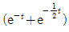
u(t)
(정답률: 29%)
30. 이상변압기의 합성인덕턴스는 얼마인가?
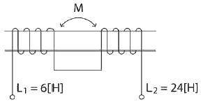
- 24[H]
- 36[H]
- 54[H]
- 68[H]
(정답률: 59%)
31. 단위 계단함수 u(t)을 라플라스 변환하면?
- 1
- 1/s
- s
- ts
(정답률: 67%)
32. 두 개의 코일 L1과 L2을 동일방향으로 직렬 접속하였을 때 합성인덕턴스가 100mH이고, 반대방향으로 접속 하였더니 합성인덕턴스가 40mH 였다. 이때, L1=60mH이면 결합계수(K)는 약 얼마인가?
- 0.5
- 0.6
- 0.7
- 0.8
(정답률: 49%)
33. 회로에서 스위치가 오랫동안 개방되어 있다가 t=0에 닫았을 때 바로 직후의 vL(0+)과 vC(0+)로 적절한 것은? (단, t＜0 에서 vC=3V이다.)
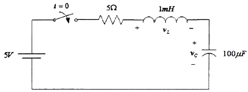
- vL(0+)=2V, vC(0+)=3V
- vL(0+)=0V, vC(0+)=0V
- vL(0+)=0V, vC(0+)=3V
- vL(0+)=2V, vC(0+)=0V
(정답률: 52%)
34. 다음 회로를 테브난의 등가회로로 변환하였을 때, 개방 단자전압(Vab)은 몇 V 인가?
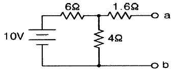
- 2V
- 3V
- 4V
- 5V
(정답률: 56%)
35. 어떤 회로에서 단자전압이 v=40sinωt+20sin(2ωt+30°)+10sin(3ωt+60°)일 때 실효치는 약 얼마인가?
- 3.24
- 32.4
- 4.58
- 45.8
(정답률: 39%)
36. 위상 정수 β가 π/2 [rad/m]인 선로에 대해 10[MHz]의 주파수를 인가한 경우 위상 속도 v[m/s]와 파장 λ[m]을 구하면?
- v = 4 × 107, λ = 4
- v = 8 × 107, λ = 8
- v = 4 × 107, λ = π/4
- v = 8 × 107, λ = π/2
(정답률: 26%)
37. 다음 그림과 같은 RLC 병렬공진회로에서 공진주파수(fr)은?
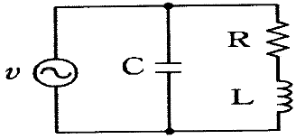
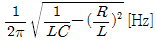
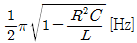
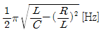
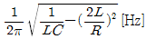
(정답률: 40%)
38. 다음 T형 회로에 대한 임피던스 파라미터인 개방 순방향 전달 임피던스(Z21)의 값으로 옳은 것은?
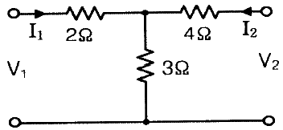
- 3
- 4
- 5
- 7
(정답률: 34%)
39. 라플라스 변환식
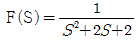
의 역변환은?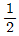
e-t sin2t- e-t sint
- e-2t sin7t
 e-2t sin5t
e-2t sin5t
(정답률: 46%)
40. 다음 그림과 쌍대가 되는 회로는?(오류 신고가 접수된 문제입니다. 반드시 정답과 해설을 확인하시기 바랍니다.)
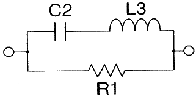
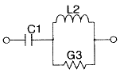
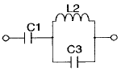
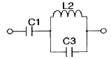
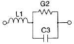
(정답률: 39%)
3과목: 전자회로
41. 전력증폭기에 대한 설명으로 옳은 것은?
- C급의 효율은 70~90% 정도이다.
- 전력효율(η)은 (교류출력÷교류입력)×100%이다.
- 최대 컬렉터손실이란 트랜지스터의 내부에서 빛에너지로 소비되는 최대전력을 말한다.
- A급의 효율이 가장 낮아 전력증폭기에는 사용하지 못하고 단지 반송파 증폭이나 체배용으로 사용을 한다.
(정답률: 36%)
42. 전계효과트랜지스터(FET) 소신호 모델에서 전달 컨덕턴스(gm)은?
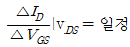
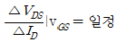
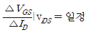
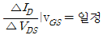
(정답률: 27%)
43. 브리지 전파정류회로에서 출력전압 VO의 전압은 몇 V 인가? (단, AC 입력 전압 Vin은 실효값이 220V이다.)
- 220[V]
- 311[V]
- 440[V]
- 560[V]
(정답률: 64%)
44. 다음 전감산기의 진리표에서 출력차(D)와 자리빌림수(B)는?
- ㉠ : 0, ㉡ : 1, ㉢ : 0, ㉣ : 1
- ㉠ : 1, ㉡ : 0, ㉢ : 0, ㉣ : 1
- ㉠ : 1, ㉡ : 0, ㉢ : 1, ㉣ : 0
- ㉠ : 1, ㉡ : 0, ㉢ : 0, ㉣ : 0
(정답률: 30%)
45. 그림과 같은 증폭기 회로에서 트랜지스터 Q3의 용도로 올바르게 표현한 것은?
- 트랜지스터 Q1과 Q2의 온도보상용
- 트랜지스터 Q1과 Q2의 바이어스 안정용
- 트랜지스터 Q1과 Q2의 구동용
- 트랜지스터 Q1과 Q2의 증폭도 안정용
(정답률: 42%)
46. 공통 베이스 증폭기의 특징이 아닌 것은?
- 전압이득이 아주 크기 때문에 단독으로 전압증폭기를 사용한다.
- 전류이득은 1에 가까운 값을 가진다.
- 매우 작은 입력저항을 가진다.
- 소신호 출력저항이 매우 크다.
(정답률: 29%)
47. 그림과 같은 플립플롭의 입력단자 T에 클록펄스가 인가될 경우 출력 (Q(t+1))은? (단, 현재 값을 Q(t)로 가정한다.)
- T=0일 때 출력 상태는 현재 값을 반전시켜 출력한다.
- T=0일 때 출력은 알 수가 없다.
- T=1일 때 출력은 현재 값을 유지하여 출력한다.
- T=1일 때 출력 상태는 현재 값을 반전시켜 출력한다.
(정답률: 52%)
48. 슈미트 트리거 회로에 관한 설명 중 틀린 것은?
- 입력과 출력 전압을 비교하는 전압 비교 회로에 이용된다.
- 입력 전압의 크기에 따라서 2개 트랜지스터 출력의 on, off를 번갈아 가며 안정상태를 유지하는 쌍안정 회로에 이용된다.
- 입력의 아날로그 신호를 출력에서는 디지털신호로 변환하므로, A/D 변환 회로에 이용된다.
- 입력 신호의 파형은 주로 펄스 파형을 사용하고 가끔씩 정현파 교류전압을 사용한다.
(정답률: 42%)
49. 다음 그림과 같은 연산 증폭기의 기능은 무엇인가?
- 미분회로
- 가산회로
- 감산회로
- 적분회로
(정답률: 46%)
50. 다음 논리회로를 간략화 한 논리회로는?
(정답률: 49%)
51. 다이오드를 사용한 정류회로에서 여러 개의 다이오드를 직렬로 연결사용하여 얻어지는 효과로 가장 올바른 것은?
- 다이오드의 내부 전압강하를 감소시킬 수 있다.
- 리플을 감소시킨다.
- 다이오드를 과도전압으로부터 보호할 수 있다.
- 전류용량을 증가시킨다.
(정답률: 62%)
52. 다음 회로에서 그림과 같은 파형이 입력되었을 때 출력파형의 형태는?
(정답률: 45%)
53. 다음과 같은 DTL 논리 회로의 게이트 기능은?
- NAND
- NOR
- AND
- NOT
(정답률: 50%)
54. 반파 정류된 파형의 평균값은? (단, 입력 전압은 Vp가 1V인 정현파로 가정한다.)
- 1V / π
- √2 V / π
- 2V / π
- 3V / π
(정답률: 46%)
55. 귀환회로에 관한 설명으로 틀린 것은?
- 귀환 증폭기의 폐루프 이득이 귀환율에 의해 결정된다.
- 귀환회로에 의해서 결정되는 안정된 폐루프 이득을 갖게 된다.
- 출력과 귀환신호의 비를 귀환율이라 한다.
- 부귀환 증폭기는 출력신호의 위상이 입력신호의 위상과 동위상인 시스템이다.
(정답률: 58%)
56. 트랜지스터의 스위칭 작용에 의해서 발생된 펄스 파형에서 turn-on 시간은?
- 하강시간
- 상승시간 + 지연시간
- 축적시간 + 하강시간
- 축적시간
(정답률: 68%)
57. 적분회로로 사용이 가능한 회로는?
- 고역통과 RC 회로
- 대역통과 RC 회로
- 대역소거 RC 회로
- 저역통과 RC 회로
(정답률: 53%)
58. 다음 회로에서 VCE = 6.5V이 되기 위한 귀환 저항기(Rb)의 값으로 가장 적당한 것은? (단, 여기서 VBE=0.7V, β=100이다.)
- 약 129㏀
- 약 275㏀
- 약 319㏀
- 약 421㏀
(정답률: 28%)
59. 수정발진기는 수정의 임피던스가 어떠한 성질을 가지게 될 때 가장 안정된 발진을 계속하는가?
- 저항성
- 근접성
- 유도성
- 표유 용량성
(정답률: 64%)
60. PLL(phase locked loop)주파수 합성기(frequency synthesizer)의 주요 성능 평가 파라미터에 속하지 않는 것은?
- 동기성능
- 위상잡음
- 의사잡음
- 루프이득
(정답률: 32%)
4과목: 물리전자공학
61. 어떠한 물질에서 전자를 방출시키는 직접적인 방법으로 틀린 것은?
- 그 물질을 압축시킨다.
- 그 물질에 빛을 조사한다.
- 그 물질에 전자를 충돌시킨다.
- 그 물질에 열을 가한다.
(정답률: 71%)
62. 도체 또는 반도체에서 Hall 기전력 VH2, 전류밀도(J) 및 자계(B)사이의 관계를 나타내는 것 중 가장 적절한 것은? (단, RH는 상수이다.)
- VH = RH⋅B⋅J
- VH = RH⋅B/J
- VH = RH⋅J/B
- VH = RH / B⋅J
(정답률: 49%)
63. pnp 트랜지스터의 이미터 효율을 정의한 것은?
- 정공전류성분 / 정공전류성분 + 전자전류성분
- 전자전류성분 / 정공전류성분 + 전자전류성분
- 정공전류성분 + 전자전류성분 / 정공전류성분
- 정공전류성분 + 전자전류성분
(정답률: 32%)
64. 반도체는 절대온도 0[K]에서 절연체, 상온에서 절연체와 도체의 중간적 성질을 가진다. 만일 불순물의 농도가 증가하였을 때, 도전율(σ)과 고유저항(ρ)은 어떻게 되는가?
- 도전율(σ)은 감소하고 고유저항(ρ)은 증가한다.
- 도전율(σ)은 증가하고 고유저항(ρ)은 감소한다.
- 도전율(σ)과 고유저항(ρ) 모두 증가한다.
- 도전율(σ)과 고유저항(ρ) 모두 증가한다.
(정답률: 56%)
65. 다음 보기의 설명이 나타내는 것은?
- 보어의 이론
- 빈의 변위법칙
- 파울리의 배타율
- 에너지 보존법칙
(정답률: 43%)
66. 외인성 반도체(n형)에서 도너(Donor) 에너지 레벨의 위치는?
- 전도대 바로 아래에 위치해 있다.
- 가전자대 바로 아래에 위치해 있다.
- 금지대 바로 아래에 위치해 있다.
- 전도대 중앙에 위치해 있다.
(정답률: 43%)
67. 진성 반도체에서 Ge의 진성 캐리어 밀도는 상온에서 Si보다 높다. 그 이유의 설명으로 가장 적합한 것은?
- Si의 에너지 갭이 Ge의 에너지 갭보다 좁기 때문이다.
- Ge의 에너지 갭이 Si의 에너지 갭보다 좁기 때문이다.
- Ge의 캐리어 이동도가 Si보다 작기 때문이다.
- Ge의 캐리어 이동도가 Si보다 크기 때문이다.
(정답률: 56%)
68. 반도체의 특성에 관한 설명 중 틀린 것은?
- 정의 온도계수를 갖는다.
- 자기효과를 갖는다.
- 불순물 첨가에 의한 저항률이 변한다.
- 금속과의 접촉 및 다른 종류의 반도체와의 접합에서 정류작용을 한다.
(정답률: 60%)
69. 원자에서 최외각전자 1개를 떼어낼 때 필요한 에너지, 즉 전자를 떼어서 무한대 거리까지 가져가는데 필요한 에너지는 무엇인가?
- 운동에너지
- 위치에너지
- 이온화에너지
- 광자의 에너지
(정답률: 47%)
70. 다음과 같은 원리와 관계되는 것은?
- 홀 효과(Hall effect)
- 콤프턴 효과(Compton effect)
- 쇼트키 효과(Schottky effect)
- 흑체방사(black body radiation)
(정답률: 57%)
71. 2×104[m/s]의 속도로 운동하는 전자의 드-브로이(de Broglie) 파장은? (단, 프랑크 상수는 6.626 × 10-34[J·s], 전자의 질량은 9.1 × 10-31[kg]이다.)
- 1.21 × 10-16 [m]
- 1.82 × 10-26 [m]
- 1.64 × 1034 [m]
- 3.64 × 10-8 [m]
(정답률: 42%)
72. 저온에서 반도체 내의 캐리어(carrier) 에너지 분포를 나타내는데 가장 적절한 것은?
- 2차 분포함수
- Fermi-Dirac 분포함수
- Bose-Einstein 분포함수
- Maxwell-Boltzmann 분포함수
(정답률: 43%)
73. 다음 중 Pauli의 배타율 원리가 만족되는 분포함수는?
- Maxwell-Boltzmann
- Fermi-Dirac
- Schrödinger
- Einstein
(정답률: 59%)
74. MOSFET의 채널폭이 공픽층 길이와 거의 같은 크기일 때, 필드 산화막 아래에서 축적된 전하에 의해 문턱전압이 증가하는 효과를 무엇이라고 하는가?
- Kirk 효과
- 감압효과
- 협폭효과
- 터널효과
(정답률: 48%)
75. n 채널 전계 효과 트랜지스터에 흐르는 전류는 주로 어느 현상에 의한 것인가?
- 전자의 확산 현상
- 정공의 확산 현상
- 정공의 드리프트 현상
- 전자의 드리프트 현상
(정답률: 47%)
76. 가전자대의 전자밀도가 1022[m-3]인 금속에 전류밀도가 106[A/m2]인 전류가 흐른다면 드리프트 속도는?
- 6.25 × 104m/s]
- 6.25 × 10-4[m/s]
- 6.25 × 102[m/s]
- 6.25 × 10-2[m/s]
(정답률: 40%)
77. 열평형 상태인 pn접합 다이오드에서 p영역의 전자밀도를 np 라 하면, n영역의 전자농도 nn은? (단, VO는 전위장벽, K는 볼츠만 상수, T는 절대온도이다.)
- nn = npe-(qVo/kT)
- nn = npln( )
- nn = npln( )
- nn = npeqVo/kT
(정답률: 13%)
78. 건(Gunn) 다이오드에서 부성저항이 생기는 원인은?
- 캐리어농도의 전압의존성
- 캐리어농도의 온도의존성
- 유효질량의 온도의존성
- 유효질량의 전압의존성
(정답률: 37%)
79. pn접합 다이오드에 역바이어스 전압을 인가할 때 나타나는 현상에 관한 설명 중 옳은 것은? (단, 브레이크다운 전압(breakdown voltage) 보다는 낮은 범위이다.)
- 이온화된 도너와 억셉터 이온이 작아진다.
- 공핍층이 더 넓어진다.
- 공핍층이 좁아진다.
- 공핍층이 없어진다.
(정답률: 59%)
80. 태양광을 DC 전기에너지로 변환하는데 사용하는 반도체 pn접합 소자를 무엇이라 하는가?
- 배리스터
- 태양전지
- 플래시 메모리
- 레이저 다이오드
(정답률: 70%)
5과목: 전자계산기일반
81. 레지스터에 내에 저장된 어떤 수를 2배, 4배, 8배 등의 2의 승수에 해당하는 배수를 구할 때 사용할 수 있는 가장 효율적인 연산자는?
- Complement
- Rotate
- Shift
- Move
(정답률: 57%)
82. 1024 × 16 비트의 주기억장치를 가진 컴퓨터에서 MAR(Memory Address Register)과 MBR(Memory Buffer Register)의 비트 수는?
- MAR=6bits, MBR=10bits
- MAR=10bits, MBR=6bits
- MAR=10bits, MBR=16bits
- MAR=18bits, MBR=10bits
(정답률: 69%)
83. FIFO 구조를 가지는 자료의 구조는?
- QUEUE
- STACK
- TREE
- GRAPH
(정답률: 48%)
84. 메모리에 관한 설명으로 가장 옳지 않은 것은?
- 캐시메모리는 주로 주기억장치만으로 부족한 용량을 보조하기 위한 용도로 사용된다.
- RAM은 휘발성 메모리이다.
- ROM은 읽기 전용 메모리이다.
- Dynamic RAM은 주기적인 재충전(Refresh)이 필요한 메모리이다.
(정답률: 55%)
85. 입출력 장치의 인터럽트 신호공급 방식이 아닌것은?
- 폴링(polling) 방식
- 데이지 체인(daisy chain) 방식
- 메모리 어드레스 레지스터(memory address register) 방식
- 벡터 인터럽트(vector interrupt) 방식
(정답률: 46%)
86. 입출력장치에서의 자료처리 방법에 대한 설명으로 가장 옳지 않은 것은?
- DMA방식은 입출력장치가 CPU를 거치지 않고 직접 메모리에 연결하여 필요한 정보를 서비스 받는 방식이다.
- 인터럽트 입출력 방식은 CPU가 입출력 상태를 항상 선별하여 정보전송을 하는 방식이다.
- 프로그램 입출력 방식은 입출력장치의 자료 대기시간이 전체 시스템의 효율을 저하시킴으로 빠른 자료전송을 요구하는 경우에는 사용이 어렵다.
- DMA는 Direct Memory Access의 약어이다.
(정답률: 35%)
87. 어셈블리 언어에서 서브루틴을 사용할 때 미리 고려할 사항으로 가장 옳지 않은 것은?
- 스택 영역을 확보한다.
- 스택포인터를 초기화한다.
- 레지스터의 중복 사용을 가능한 배제한다.
- 서브루틴 실행 후 복귀(return)할 번지를 프로그래머가 사전에 결정한다.
(정답률: 37%)
88. CPU의 명령어 구성에서 연산코드(OP코드) 필드가 8 비트라면 총 몇 개의 명령어를 수행할 수 있는가?
- 64
- 128
- 256
- 512
(정답률: 59%)
89. 니모닉코드로 나타나 있는 명령어를 기계가 알 수 있는 2진수로 변환하는 기능을 하는 프로그램은?
- Assembler
- Compiler
- Interpreter
- Processor
(정답률: 41%)
90. 스택(Stack)의 설명으로 가장 옳지 않은 것은?
- 주로 0-주소(Zero-Address) 명령어를 수행하기 위한 자료구조로 사용된다.
- 길이가 가변적이다.
- LIFO(Last In First Out)의 특징을 갖는다.
- 스택의 탑(Top)에 데이터를 입력하는 동작을 POP이라 한다.
(정답률: 55%)
91. 데이터 인출(Data Fetch)을 위해서 메모리를 참조할 필요가 없는 명령어의 주소지정방식은?
- 직접 주소지정(Direct Addressing)
- 간접 주소지정(Indirect Addressing)
- 레지스터 주소지정(Register Addressing)
- 즉시 주소지정(Immediate Addressing)
(정답률: 46%)
92. CPU의 내부구조를 나타내는 레지스터 중 메모리로부터 읽은 명령어를 보관하는 레지스터는?
- ALU(Arithmetic Logic Unit)
- IR(Instruction Register)
- PC(Program Counter)
- MAR(Memory Address Register)
(정답률: 29%)
93. CPU의 연산장치에 속하는 레지스터가 아닌것은?
- 프로그램 카운터
- 누산기
- 시프트 레지스터
- 가산기
(정답률: 45%)
94. 컴파일러에 의해 컴파일 된 목적프로그램의 설명으로 가장 옳은 것은?
- 사용자가 이해하기 쉬운 프로그램이다.
- 어셈블러를 거쳐서 기계어로 번역된 프로그램이다.
- CPU가 직접 해독 할 수 없다.
- 고급 언어에 해당하며 객체 지향적인 프로그램이다.
(정답률: 63%)
95. 마스크(mask)를 이용하여 비수치 데이터의 불필요한 부분을 제거하는데 사용하는 연산은?
- AND
- OR
- EX-OR
- NOR
(정답률: 55%)
96. 다음의 프로그래밍 언어 중 객체지향 언어에 속하지 않는 것은?
- JAVA
- C#
- PASCAL
- Smalltalk
(정답률: 32%)
97. 컴파일러에서 하나의 프로그램이 처리되는 과정을 옳게 나열한 것은?
- 번역 → 적재 → 실행
- 번역 → 실행 → 적재
- 적재 → 실행 → 번역
- 적재 → 번역 → 실행
(정답률: 32%)
98. 마이크로프로세서의 특징이라고 볼 수 없는 것은?
- 뛰어난 처리 속도
- 설계상 변화가 용이
- 구조 변경의 어려움
- TTL과 ECL 사용
(정답률: 57%)
99. (42)10를 8비트 2진수로 나타낸 경우 1비트 산술적 우측 시프트 하였을 때의 값을 10진수로 나타내면?
- 20
- 21
- 84
- 85
(정답률: 69%)
100. 다음 논리도가 나타내는 회로는?
- half-adder
- full-adder
- half-subtracter
- full-subtracter
(정답률: 61%)